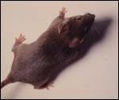
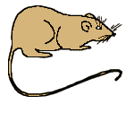
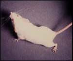
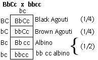

Dihybrid Cross Problem Set
Problem 12: What is the genotype of the agouti parent?
Tutorial to help answer the question
|
Two unlinked loci effect mouse hair color. CC or Cc mice are agouti. Mice with genotype cc are albino because all pigment production and deposition of pigment in hair is blocked. At the second locus, the B allele (black agouti coat) is dominant to the b allele (brown agouti coat). A mouse with a black agouti coat is mated with an albino mouse of genotype bbcc. Half of the offspring are albino, one quarter are black agouti, and one quarter are brown agouti. What is the genotype of the black agouti parent?
|
Tutorial
Phenotypes and possible genotypes
|
This is a classic example of the genetic phenomena known as "epistasis",
where the genotype at one locus (homozygous recessive "cc") masks the
phenotype that results from the genotype at a different locus (BB, Bb, or bb).
For the two genetic loci B and C, there are nine different genotypes possible, and three different phenotypes. These are summarized in the
following diagram:
|
|
Black agouti mouse

Courtesy of Dr. G.L. Wolff
Possible genotypes
BB CC
Bb CC
BB Cc
Bb Cc
|
Brown agouti mouse

(No photo available.
Contribution welcomed)
Possible genotypes
bb CC
bb Cc
|
Albino mouse

Courtesy of Dr. G.L. Wolff
Possible genotypes
BB cc
Bb cc
bb cc
|
Parents
|
The unknown parent has the black phenotype. For this phenotype, there must
be at least one dominant allele at the B locus and one dominant allele at the C locus. Therefore the genotype of the unknown parent must have the form of B?C?, where the question marks indicate that the possibilites at the B locus are either BB (homozygous) or Bb (heterozygous), and at the C locus either CC (homozygous) or Cc (heterozygous).
|
|
Black Agouti
|
X
|
Albino
|
Courtesy of Dr. G.L. Wolff
Possible genotypes
|
|
Courtesy of Dr. G.L. Wolff
Known genotype
|
BB CC
Bb CC
BB Cc
Bb Cc
|
|
|
Offspring
|
The observation that the agouti parent of unknown genotype can have an
offspring with the albino phenotype (cc) means that the parent must be able to transmit the recessive c allele. Thus the parent is heterozygous (Cc) at the C locus.
The observation that the agouti parent of unknown genotype can also have an
offspring with the brown agouti phenotype (bb) means that the parent must be able to transmit the recessive b allele. Thus the parents is also heterozygous (Bb) at the B locus.
|
Punnet square for suspected cross of Bb Cc X bb cc
|
From these observations, we would predict that the Agouti parent has a
genotype of BbCc. We can test this prediction by completing a Punnet square for an BbCc x bbcc test cross to determine if the observed offspring ratio agrees with the predictions.
|
|

|
|
The predicted ratio of offspring is consistent with the BbCc x bbcc genetic
cross.
|
  
   
The Biology Project
University of Arizona
September 9, 1998
Contact the Development Team
http://biology.arizona.edu
All contents copyright © 1996. All rights reserved.
|